|
Dimensi tiga merupakan suatu hal yang terbentuk dari 3 komponen yaitu garis, titik, dan bidang.jadi, dimensi tiga bisa disebut juga dengan bangun ruang, yang mana bangun ruang itu mempunyai volume.bangun ruang dari dimensi tiga contohnya kubus, balok, prisma, dll terbentuk dari 3 elemen dasar tersebut yaitu titik, jarak, dan bidang. Pemahaman akan titik, jarak, dan bidang merupaka suatu keharusan. Hal ini dikarenakan soal-soal dimensi tiga banyak yang merupakan variasi dari ketiga elemen tersebut. Sehingga perlu pemahaman konsep secara mendalam tentang titik, jarak, dan bidang. Oleh sebab itu, pada sesi kali ini, Saya akan membahas secara detail tentang :
1. Kedudukan titik, garis, dan Bidang dalam ruang dimensi tiga
Proyeksi
2. Jarak dari titik ke titik, titik ke garis, dan titik ke bidang
3. Jarak dua garis sejajar, jarak garis dan bidang yang sejajar, jarak dua bidang sejajar
4. Sudut antara garis dan bidang, sudut antara dua bidang.
|
#Kedudukan titik1. Titik Terletak pada Garis
Contoh: Titik A dan Garis AB |
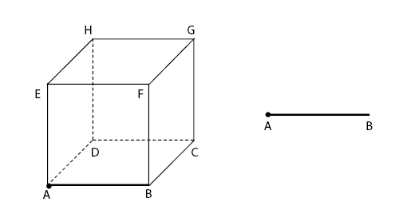 |
2. Titik Terletak di Luar Garis
Contoh: Titik C dan garis AB |
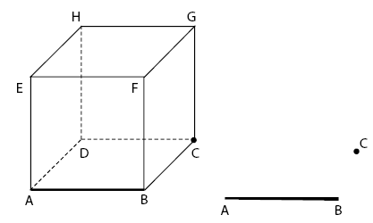 |
3. itik Terletak pada Bidang
Contoh: Titik A dan bidang ABCD
|
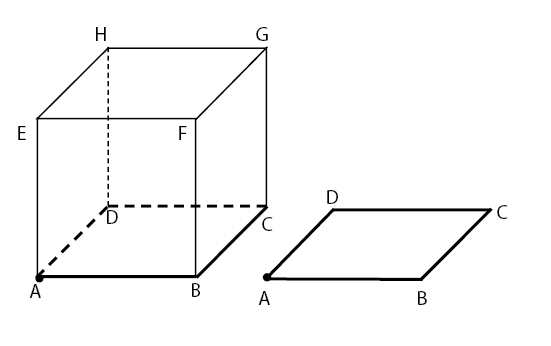 |
4. Titik Terletak di luar Bidang
Titik E dan bidang ABCD |
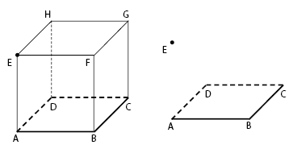 |
#Kedudukan GarisSebelum masuk pada pembahasan kedudukan garis pada bidang, mari mengulang materi kedudukan dua garis terlbih dahulu. Kedudukan dua garis terdiri atas berimpit, berpotongan, sejajar, dan bersilangan. Simak uraian masing-masing pada pembahasan di bawah. |
1. Berimpit
Sebuah garis dikatakan berimpit jika kedua garis saling bersekutu.
Contoh: garis AB dan garis AB |
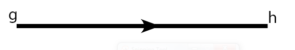 |
2. Berpotongan
Kedua garis dikatakan berpotongan jika mempunyai satu titik persekutuan yang disebut dengan titik potong.
Contoh: Garis AB dan AD |
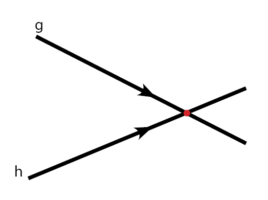 |
3. Sejajar
Kedua garis dikatakan sejajar jika dua garis itu terletak pada satu bidang dan tidak mempunyai titik persekutuan.
Contoh garis AB dan EF |
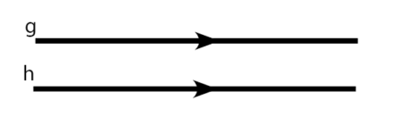 |
4. Bersilangan
Kedua garis dikatakan bersilangan jika dua garis itu tidak sejajar sekaligus tidak berpotongan.
Contoh: Garis EH dan AB |
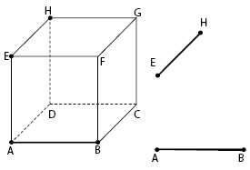 |
#Kedudukan Antara Garis pada BidangKedudukan antara garis pada bidang meliputi kedudukan garis terletak pada bidang, kedudukan garis memotong bidang, dan kedudukan garis sejajar bidang. Langsung simak uraian masing-masing pada pembahasan di bawah. |
1. Garis Terletak pada Bidang
Sebuah garis dikatakan terletak pada bidang jika setiap titik pada garis tersebut terletak juga pada bidang.
Contoh: garis CD dan bidang ABCD |
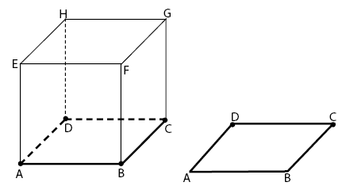 |
2. Garis Memotong Bidang
Sebuah garis dikatakan memotong bidang jika garis dan bidang tersebut mempunyai satu titik persekutuan yang disebut titik potong/titik tembus.
Contoh: garis BC menembus bidang ABFE di titik B |
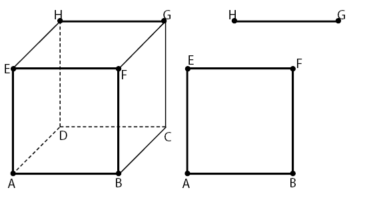 |
3. Garis Sejajar dengan Bidang
Garis dikatakan sejajar dengan bidang jika garis dan bidang tersebut tidak mempunyai titik persekutuan atau titik potong.
Contoh: garis GH dan bidang ABFE |
|
#Kedudukan Antara Bidang dan BidangPembahasan materi dimensi tiga selanjutnya adalah kedudukan antara bidang dan bidang. Keudukan antara dua bidang meliputi berimpit, sejajar, dan berpotongan. Untuk lebih jelasnya, simak uraian masing-masing pada pembahasan di bawah. |
1. Berimpit
Dua bidang dikatakan berimpit jika kedua bidang tersebut saling bersekutu.
Contoh: bidang ABFE dan bidang ABFE |
|
2. sejajar
Dua bidang dikatakan sejajar jika kedua bidang tersebut tidak bersekutu pada satu titik manapun.
Contoh: bidang ABFE dan bidang DCGH |
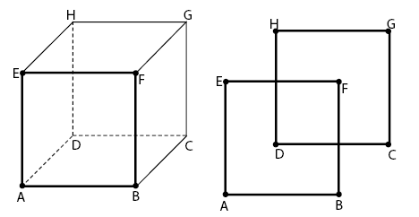 |
3. berpotongan
Dua bidang dikatakan berpotongan jika kedua bidang itu mempunyai sebuah garis persekutuan atau garis perpotongan.
Contoh: bidang ABCD dan bidang ABFE |
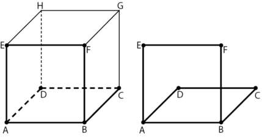 |